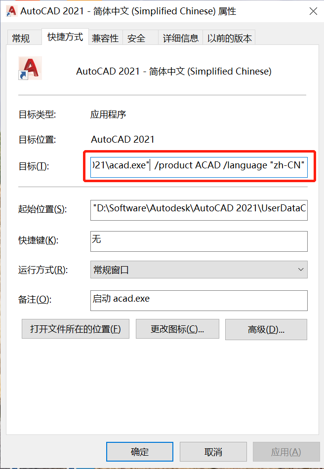
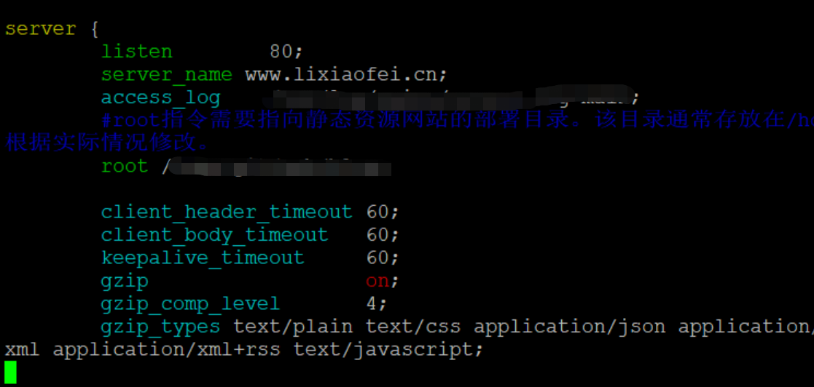

上篇文章中，我们通过一个例子，了解了如何从文本文件中读取数据，并做统计处理，简单的一个脚本能帮助我们解脱繁琐的工作，将宝贵的时间用在更重要的事情上。
作为练习还行，但作为真正有用的程序还有很大的差距，今天我们就来再进一步，让程序更智能更有用。
然后我们需要了解一种程序设计思维，这种思维方式，可以帮我们解决很多需求分析问题。
现在开始吧！
我们回顾一下上次的程序。
主要是对一个打卡日志文件的数据提取和简单分析。
如果要作为一个真正有实际用处的程序，还需要很多方面的功能和改善，比如自动读取打卡机上的文件、智能处理应该处理的打卡日志、将统计分析结果自动发送给相关人员、如果发生处理问题，及时上报问题等等。
这些都可以通过不断地优化，让程序功能更强，更智能。
为了达到这些目标，或者实现这些功能，我们将逐步展开，步步为营，让自己获得一个完整的软件开发能力体系。
需求变了
有很多段子用需求变了来调侃程序员的窘境，确实，当需求不受控制，方向大变时，任何编程技能和手段都会失效，而这样巨大的变化和不确定性，往往是人祸大于天灾，比如项目背景、用户意图理解的不对，或者需求分析不到位，或者设计存在巨大漏洞等等。
如果是正常的合理的变化，就应该积极应对，甚至采用一些技术手段，和理论方法来拥抱变化。因为变化本身，正是推动我们这个世界不断前行的动力，有了变化，才有改进，才有发展，才有进步。
在上次的研究中，我们假设每天的打卡日志文件已经获得了，只要指定打卡文件的文件名就可以处理了。
而这次，我们需要让程序能自动从存放众多打卡文件的目录（下称 日志目录）中，找到应该处理的打卡日志文件。
这里有个问题，打卡机上的日志文件怎么到日志目录上的呢？
通常有三种可能性：
- 打卡机自带网络服务器功能，可以通过网络访问到上面的日志目录
- 打卡机上可以自动将日志文件推送到指定的网络上的日志目录中
- 由一个服务器程序（也可以是人工）定时从打卡机上提取最新的日志文件，同步到日志目录中
无论是哪一种情况，都对我们无关紧要，这次，我们只要知道从日志目录中获取日志文件就可以了。
那么如何实现让程序自己确定应该处理哪个文件呢？
需求分析
面对一个需求，不要急于实现，而是先要仔细地思考和设计解决方案。
与上次的实现相比，我们不能再将日志文件名，写死 在代码里了，因为最新的日志文件名是变化的。
将可变的部分写死在程序代码里，不是个好主意，这也是很多程序缺乏灵活性甚至不可维护的主要原因之一。
于是对于新需求来说，需要解决的核心问题就是：如何获取待处理的日志文件名。
我们先将注意力从程序实现上移开，展开想象，将自己想成一段程序代码，试想一下面对这样的问题自己应该如何处理。
把自己想象成一段程序，身临其境地思考问题，是个寻找解决方案的好方法
因为我们知道日志文件名是以日期命名的（见上一篇中的假设），如果我们也知道已经处理到哪个文件了，只要找到比这个文件名的日期 更大或者更后 的一个文件，就是我们要处理的文件。
比如处理到了 2022-07-20.txt，如果存在 2022-07-21.txt 这个文件，那就是我们要处理的文件。
另外，如果我们从来没有处理过任何文件，那么目录中日期最小的那个文件就是我们要处理的文件。
问题又来了，我们如何知道已经处理了哪些文件，或者我们最后处理的文件名是什么呢？
现实当中，我们可以记住（保存在记忆里），或者写在一张纸上，也就是说，我们需要在一个地方记录一下 处理到哪里 这个重要的信息。
想到这里，对于新的需求的思考与设计就做完了。
整理一下思考的结果：
- 找到上一次处理到的文件名
- 找到比这个文件名更大的文件名，如果找到即为需要处理的文件
这就是满足需求的 解决方案。
实现解决方案
除了写死之外，如何让程序知道应该处理哪个文件呢？
为程序提供外部信息
让程序知道处理到了哪个文件这个信息，属于程序的外部信息，因为和程序的处理逻辑没有太大关系，并且与程序的生命周期也没关系，即这样的信息在程序启动前以及结束后都会存在。
对于提供给程序的外部信息，一般我们还有两种选择。
第一种：通过运行参数：
1 | python main.py 2022-07-12 |
在命令行中，正常命令后面添加的数据就是程序的运行参数，上面命令行中，main.py 作为 python 的运行参数，而 2022-07-12 作为 main.py 的参数。
这种程序运行参数很普遍，即使在图形界面中也存在，而且作用巨大，比如笔者的 AutoCAD 程序快捷方式中就有运行参数：

目测参数的作用是指定产品版本和语言。
注意：很多恶意软件常常会利于这一点，在浏览器的快捷方式中加入特定运行参数，让浏览器打开后直接访问恶意网站等等
不过，这种方式对我们帮助不大，因为可能需要每次改变输入参数，不是很方便。
第二种：利用配置文件：
配置文件是为程序提供外部信息的常见方式，对于大部分软件来说，在安装时将其配置文件会放在计算机的特定位置， Windows 中，会在用户目录下，创建软件对应的隐藏文件夹来存放；Linux 和 Mac 中，会在 /etc 目录下存放配置文件。
配置文件可以提供更多更复杂的信息，比如这是 Nginx Web 服务器的配置信息：

当然配置文件和内容也可以很简单，只要能满足需求，形式和内容可以随意。
对于我们的问题来说，我们可以选择文本文件，来记录一个最后处理的日志文件名。
为什么不用程序中的 变量 来记录该处理哪个文件呢？
这是因为，变量只在程序运行过程中有效，或者说变量是程序运行状态下创建的，在程序结束或者退出之后，所创建的变量以及打开的资源就会被释放，下次打开时程序将不记得上次变量中的内容了。就像我们的短时记忆。
不过对于面向对象的编程语言（Python 算是）来说，有种 持久化技术，可能在程序启动时恢复之前的变量内容，但本质，上也是将信息存储在外部，类似于配置文件。
不让程序关闭行不行？
理论上说是可以的，但是想要制造出永不关闭的应用程序，难度是非常大的，因为除了技术本身的复杂度之外，还需要保障计算机不会崩溃，不会断电等等很多外部问题，这一定是我们不愿意去直接解决的。
读写配置信息
最简单的配置文件就是文本文件，我们只需要打开文本文件，读取其中的内容就可以。
当程序处理完成，再将处理过的文件名写入其中即可。
读取文件上一次处理日志文件时我们了解过，而如何写入呢？
很简单，只要改变一个参数就可以了：
1 | config = open('config.txt', 'w', encoding='utf-8') |
- 第一句的意思是从当前目录下，打开一个
config.txt文件，打开模式为 写入。请注意与读取文件相比，第二个参数从r变成了w，w其实就是 write 的首字母，含义是覆盖性写入。关于操作文件的open方法更多信息请参考：Python open 函数 - 第二句表示向文件中写入一个字符串，即最后处理的日志文件名。如果要写入一行的话，末尾需要添加特殊字符：换行符
\n，更多关于特殊字符的表示，请参考转义字符 - 第三句为关闭文件，这时会将内容写入硬盘上的文件，并保存。当然我们可以用
with关键字来省去调用close方法，请参考上一篇文章中的说明
可以看到只要将 open 方法的第二个参数换 w 就能实现对文本文件的读取了。
另外，参数 w 还有个作用就是当要写入的文件不存在时，会自动创建这个文件。这就很方便了，因为我们第一次运行时，往往会忘记创建这个配置文件，这样相当于让程序可以 “自理” 了。
检索文件
通过配置文件，我们就能得到上次处理到了哪里。下面就需要找到下一个要处理的文件是什么。
经过前面的需求分析，我们知道下一个文件名是一个比上次处理的文件名大的。
看到需要比较，我们就能知道需要用到 分支语句，字符串能像数字一样被比较吗？
看看下面的语句：
1 | 'a' < 'b' |
能猜到结果会是 True 还是 False 吗？
答案是显而易见的，排在前面的字母小，后面的字母大，也就是说字符串可以相互比较。
为什么呢？
这就会涉及到数据基础编码规则 ASCII 码了，ASCII 中对 128 个字符进行了编码，对于数字和字母都是按照自然顺序从低到高进行编码的。
这样当字符串被比较时，就能按照它们字符的编码数字来进行比较了。排在前面的，即编码比较小的字符小，排在后面的，即编码比较大的字符大。
对于字符串来说，是通过逐个比较每个字符来确定大小的，比如 abc 和 baa 来比较，虽然 baa 的后两位字符比 abc 的小，但是由于 b 比 a 大，所以更大的字符串是 baa。
想一下电脑上常用的按名称排序功能，其实就是利于字符串的大小进行排序的。
如果你仔细观察会发现一个有趣的现象，如果我们有大于 10 首的播放列表，文件名是数字编码，例如
1.mp3、2.mp3…10.mp3…，我们想从1开始按顺序播放，常常得到的顺序是1.mp3、10.mp3…2.mp3，现在知道问什么了吧。只要在不足两位数的文件名前补零，比如01.mp3就不会排错了。
我们还需要解决一个问题，就是如何获取日志目录中有哪些文件名。
对于文件和目录的操作，操作系统提供了很多方法，这些方法也被各种编程语言封装成了便利的功能。
在 Python 中，os 这个 库，集成了很多文件和目录的操作方法。
os是一个集成了操作系统各种功能的库，什么是 库 呢？简单说就是一系列相关的程序资源(方法、类等)的集合，以方便被其他程序使用。类似的还有 包、模块，可以将它们理解成公共方法，在需要用到时将它们引入程序中就可以了。
更多关于 库、包、模块 的知识可参考 Python 模块、库、包的区别
其中 listdir 就可以用例罗列目录中的内容：
1 | import os |
listdir 可以接受一个目录路径参数，如果这个路径存在，就会将其中的文件名和目录名，放入一个数组，返回出来。
通过 print 方法就可能看到目录中的内容（文件名和目录名）。
对我们来说，我们只需要遍历 listdir 返回的结果，找到合适的文件名就可以了。
开始之前还需要确定一个事情，就是数组中的文件名是排好序的吗？
如果不是排好序的，我们比较过程就会很麻烦。
按说下一个文件就是当前文件的日期加一，但实际情况可能会存在跳过节假日等情况，因此不能假设文件名是连续的。
如果排好顺序，只要找到我们的文件名，下一个或者上一个（取决于升序还是倒序排列）文件名就是目标文件名。
幸运的是，通过 listdir 获得的内容列表就是按照字符串，升序排列的。
下面只需要通过循环就可以找到目标文件名了：
1 | import os |
lastfilename中存放的是我们上一次处理到的文件名，这里忽略了从配置文件读取的代码逻辑- 在
for循环中，我们判断是否有比lastfilename更大的文件名，一旦找到就将文件名记录在targetFilename中，立即退出循环 - 最后，判断
targetFilename，如果有值，说明已经找到，如果没有，说明还没有更新的文件需要处理
关于最后一点 targetFilename 的判断很重要，它属于边界值分析的范畴，处理好了边界值文件，当程序作为服务，反复运行时，也不会出错或者做没必要的运算。
梳理与集成
现在回顾一下整个过程。
-
第一步，从打卡日志目录中，获取一个待处理文件名；
-
第二步，处理日志文件，将处理结果显示出来；
-
第三步，记录最后一个已处理文件名；
和上一次的处理相比，多了第一步和第三步。
对于第一步来说，输入是配置文件，输出是找到的待处理文件名（或者未找到）；
对于第二步来说，输入是待处理的文件名，输出是打卡统计结构；
对于第三步来说，输入是待处理的文件名，输出是记录完成结果；
对于整体处理来说，输入是配置文件，输出是打卡统计结果。
能发现什么？
我们能看到，无论是整体，还是部分，都是由 输入，处理，输出 三部分组成。
函数
现在，回顾一下前面讲述过的 函数（方法），对于一个函数来说，也由输入、处理、输出这三部分组成，也就是说 函数就是一个程序处理的集合，或者一个单元。
对于比较小的处理过程，编写一个函数就够了，比如上一节中，我们统计打卡日志文件的过程，甚至没有定义一个函数，因为处理过程本身就相当于一个函数。
对于大的复杂的处理过程，可以由不同的函数组合起来，比如我们这次的程序，由三部分组成。
那么 python 里的函数如何定义呢？先看代码：
1 | def fun(input1, input2): |
def关键字可以定义一个函数，函数名是fun，和变量一样，可以根据实际情况命名fun后面的括号里，定义的是参数，也就是函数的 输入 ，可以不定义任何输入参数- 函数定义的下一行，比定义缩进了的部分是 处理 过程
return引导的是一个 输出 ，如果不用return做显性输出的话，函数也输出，但输出的是None
经过这样的定义，我们就 可以把任何过程写成函数的形式。
那么写成函数有什么好处呢？
- 可以提供复用率，比如我们常用的
print，随时可用，不用每次再写一遍细节处理代码。 - 可以封装过程细节，让代码更简洁，更符合逻辑。
- 方便功能实现以及测试，因为函数内部具是一个封闭空间，功能集中，不会影响函数外的环境。
函数化
现在我们将各个功能做一个函数化改造。
第一个是找到待处理文件：
1 |
|
- 我们给查找待处理文件名，起的名字是
findTargetFileName - 可以接受两个参数，第一个是配置文件的名字，第二个是日志文件的目录
- 处理部分，首先打卡配置文件，获取到一行信息，然后获取日志目录的内容，并查找目标文件名
- 最后将获得到的文件名返回出来
这个过程还可以拆分成获取配置信息 和 查找目标文件名两部分，这样可以减少程序对配置文件的依赖，请读者自行实践。
第二个是处理日志文件，获取统计结果：
1 | def genReport(logFilename): |
genReport用来生成打卡报告，接收一个打卡日志文件名作为参数- 主体部分就是上一篇文章中统计的部分
report是统计结果，之前是直接打印到终端上的，这次将统计记录放在变量中，返回，这样相当于将结果的处理权交给了后续的其他处理
最后我们需要将处理过的文件名，记录到配置文件里，为下一次处理提供方便：
1 | def setConf(configFilename, content): |
setConf接受两个参数，一个是配置文件名，和配置的内容- 主体部分是打开配置文件，将内容写入其中
到此我们就完成了整体处理过程的各个部分，接下来将这些部分根据业务需求集成起来。
集成
根据业务要求，首先获取需要处理的文件，然后做统计处理，最后记录配置文件，这个和我们最初的分析是一致的，于是代码就可以写成：
1 | configfile = 'config.txt' |
- 首先定义了必要的环境信息，比如配置文件的位置，日志目录的位置，虽然是写死在代码里的，但这部分信息不会频繁变化
- 获得目标文件名之后，不能直接用来生成报告，而是先要判断一下文件名是否为空，因为有可能没有需要处理的文件，这一点很重要
- 如果获取到了日志文件名，就生成报告，打印报告，并且将处理过的文件名记录到配置文件中
- 如果没有获取到日志文件，打印出一个提示
到这一步，我们会发现，我们回到了这个任务的最开始，也就是所谓的业务描述部分。
这段集成在一起的代码，恰恰就是一个业务的描述，而前面我们做的，只是不断地深入到一个个问题的细节中去，解决一个个具体的问题，而这一切都是为最后的业务描述所服务的。
总结
现在回顾一下整个过程。
首先我们提出了一个新的业务情况，为了应对这种业务情况，我们做了业务分析，和解决方案。
然后，我们将解决方案分成不同的部分，并解决其中遇到的各种具体问题。
接着，研究各个组成部分的输入、输出，将它们编写成函数。
最后，按照业务描述，将组成部分的函数集成起来，完成了整个业务的实现。
这个过程可以适用于大部分的软件构造过程，称之为 自上而下设计，自下而上实现。了解了这个过程，理论上就可以构造出任何程序。
另外，需要重点强调的是 函数，它能将复杂的、庞大的、业务无关的内容封装起来，只展示出与其打交道的输入输出部分，即接口，让我们的过程更简洁，业务更清晰，还有让不同部分有了被复用的机会。
例如，在另外的日志文件处理过程中，报告生成方法 genReport 可以直接被复用。
下次，我们将会讨论如何将结果发送给相应的人，以及如何将程序做出一个服务。
笔者的水平有限，文章中难免出现各种错误和问题，恳请读者不吝批评、指正。十分感谢！
比心！